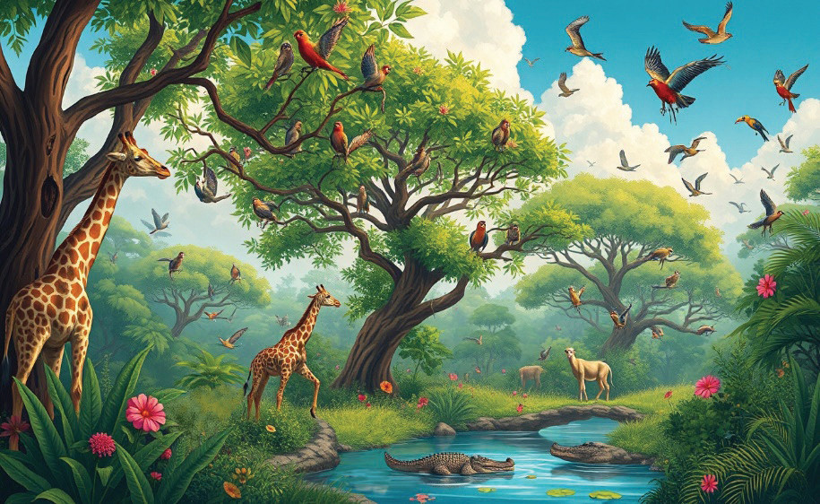

Activity 2.6
Use library and internet sources, then examine similarities and differences between human beings and animals.
The Garden of Eden
The Garden of Eden also known as the Garden of God. The Garden of the Lord as recorded in the book of Genesis, represents ‘biblical earthly paradise’ inhabited by the first created man and woman, Adam and Eve, prior to their expulsion for disobeying the commands of God. In Hebrew “Eden” means Garden. In Mesopotamian language “Eden” means fertile plain. The Lord God planted a garden in Eden, in the east and there He put the man whom He had created. The creation account states that God made to grow, every tree of the following qualities: Pleasant to the sight, and good for food and the Tree of life (Genesis 2:8-9). In the midst of the garden God planted the Tree of the knowledge of good and evil. Figure 2.2 portrays what might have been the visibility of the original Garden of Eden.

Figure 2.2: A portrait of the Garden of Eden
Rivers in the Garden of Eden
The study of the four rivers in the Garden of Eden is essentially based on Genesis 2:10-14.
The first river is Pishon. The name Pishon means increase or full flowing. The river
BIBLE KNOWLEDGE FORM ONE.indd 15
29/11/2024 17:29